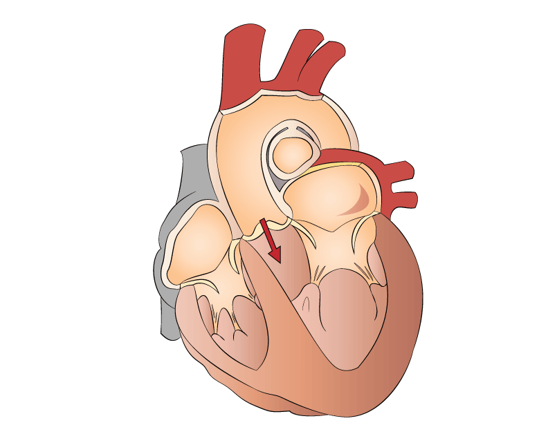
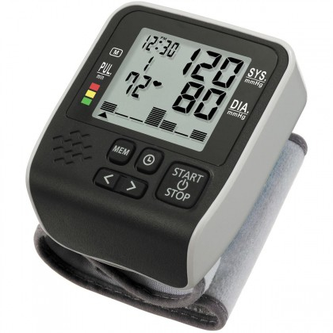

Tokom cijelog života srčani mišić ritmično se grči i opušta. Grčenje srca zove se sistola, a opuštanje dijastola. Za vrijeme sistole krv iz srca se pumpa, a za vrijeme dijastole krv dotiče u srce. Važno je shvatiti da se ne grče (kontrahuju) svi mišići srca odjednom. Mišići pretkomora i komora grče se i opuštaju naizmjenično-kad su pretkomore zgrčene, komore su opuštene, i obrnuto. Kada su pretkomore raširene, u njih se uliva krv koja do srca dolazi venama. Grčenjem pretkomora krv prelati u komore. Zatim slijedi grčenje komora, pri čemu se krv istiskuje u arterije. Nakon toga slijedi kratka pauza, a potom se proces ponavlja.
|  |  |
poprečni presjek srca | aparat za pritisak 72 otkucaja/min, 120/80 mm Hg pritisak |
Ritmički rad srca odražava se i na zidove arterija. Kada se mišići komora zgrče, krv prelazi u arterije, vrši pritisak na njihove zidove i izaziva širenje arterija. Kada se mišići komora opuste, komore se pune krvlju, a arterije se vraćaju u prvobitni položaj. Ritmičko pulsiranje arterije naziva se puls ili bilo i odražava brzinu srčanih otkucaja. Broj otkucaja u srcu zavisi od starosti i aktivnosti. Srce odrasle, zdrave osobe u stanju mirovanja napravi 60-80 otkucaja u minuti.
Dok su mišići komora zgrčeni, krv djeluje na zidove arterija najvećom silom. Tada je pritisak u arterijama najveći i označava se kao sistolni ili "gornji" pritisak. Najmanji pritisak krvi na zidove arterija je kada se mišić komore širi, a naziva se dijastolni ili "donji". Normalne vrijednosti krvnog pritiska su 16/10,7 kPa, tj. 120/80 mm Hg.